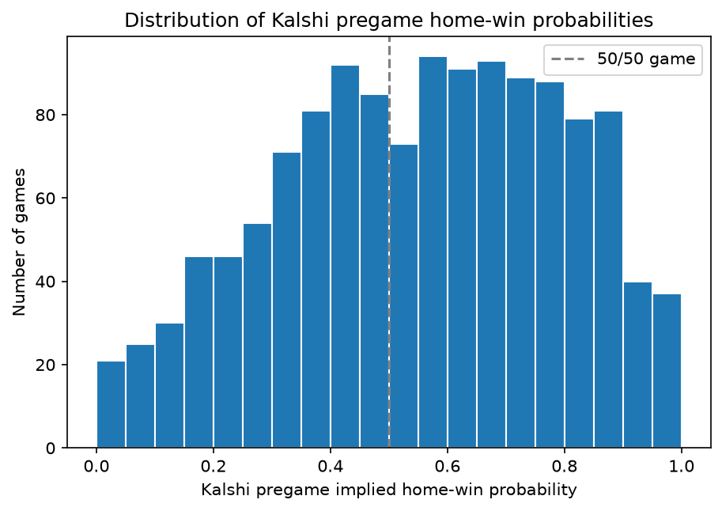
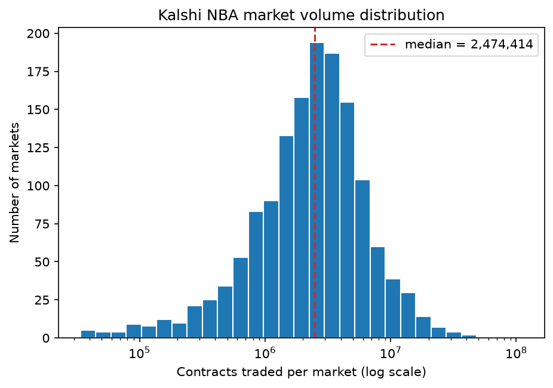
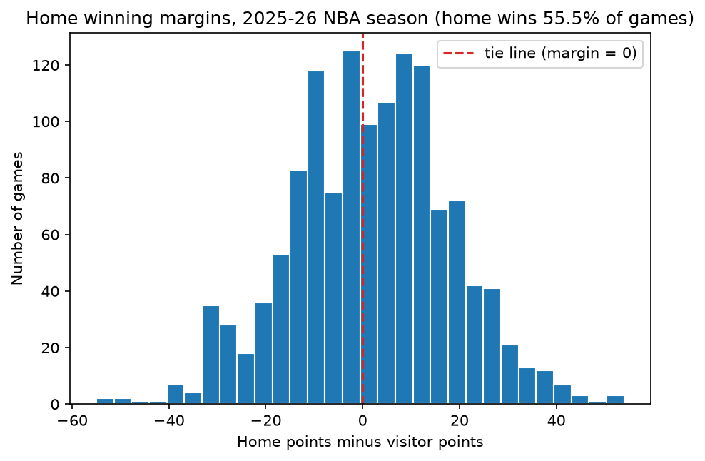
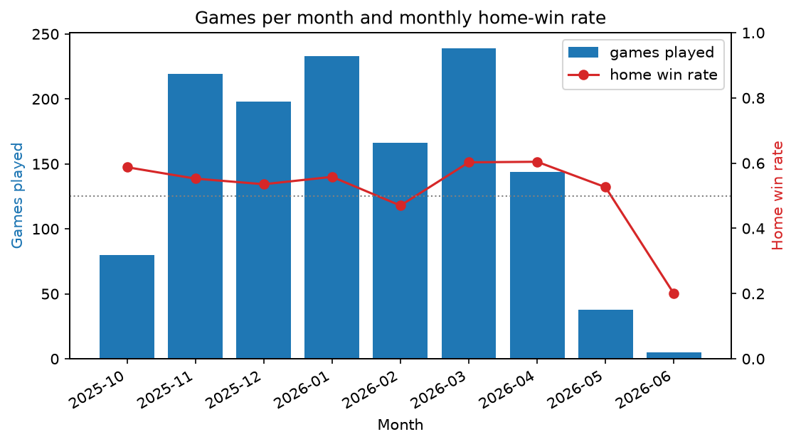
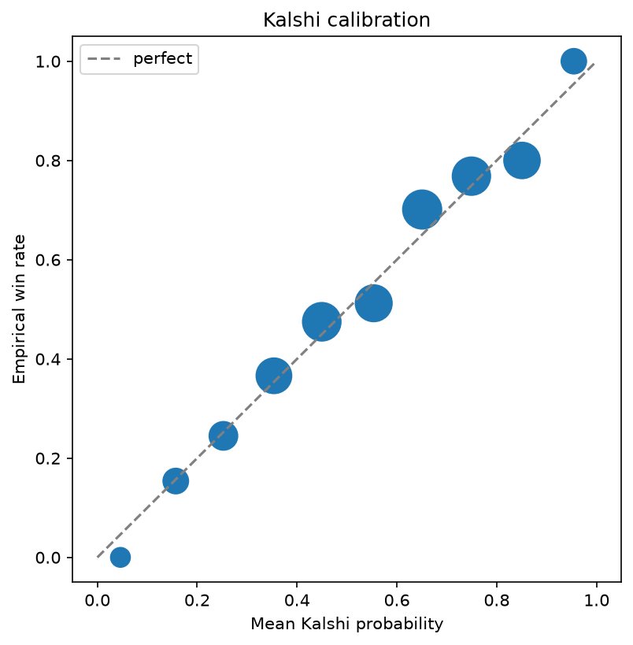
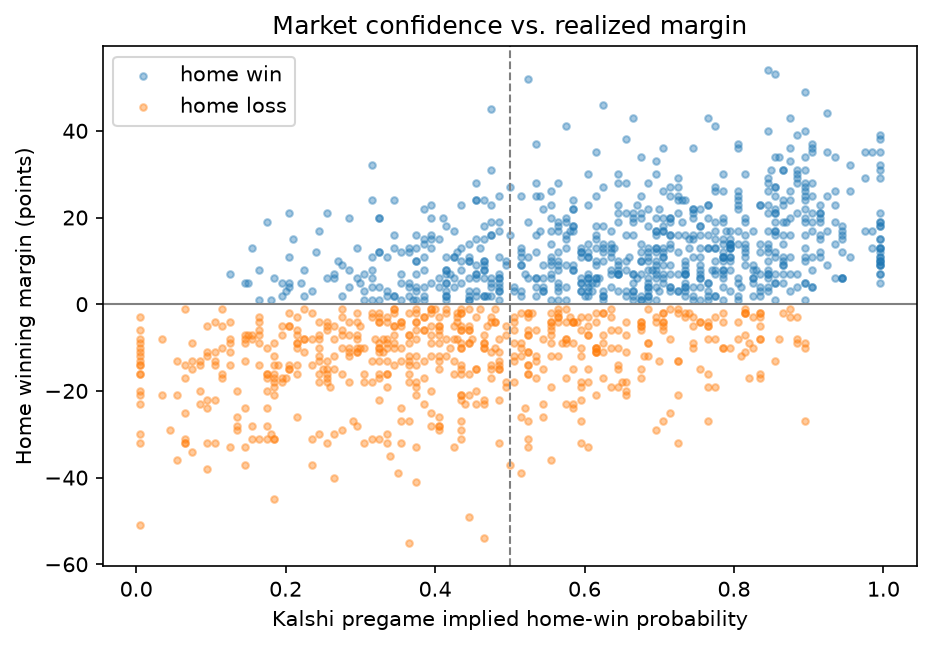

Part 2 — Exploratory Data Analysis
Author: Winston Wihono
GitHub repository (public):
https://github.com/wwihono/kalshi-reader
All source code for data collection, cleaning, EDA, figures, and tests lives in this
repository. Every number and figure in this report is reproduced by running
python scripts/run_eda.py.
Prediction markets such as Kalshi let participants trade contracts on whether specific events will occur; in an NBA game market, the contract price can be read as the market's probability that a team wins. Those prices are shaped by traders, information flow, liquidity, and public opinion, and I am interested in whether statistical models can identify patterns the market does not fully price in. NBA games suit this question because teams play often and measurable pregame factors (recent form, home-court advantage, rest, point differential) exist for every game. The project does not assume a model can reliably profit; it evaluates whether prices are calibrated, when the market errs most, and whether apparent edges survive on games the model has never seen.
The first dataset comes from Kalshi's public trade API (no authentication needed for
market data). NBA game-winner markets belong to the KXNBAGAME series; recent
markets come from /trade-api/v2/markets and archived markets from
/trade-api/v2/historical/markets. Both endpoints are cursor-paginated, so my
collector follows cursors until exhaustion and saves the raw JSON under
data/raw/kalshi/. Key fields include ticker,
event_ticker, title, the yes/no subtitles,
occurrence_datetime, settlement_value_dollars,
result, and volume_fp. For each game I additionally request
one-minute candlestick price history and keep the last candle ending at least 15 minutes
before the scheduled tip-off, so live-game information cannot leak into the pregame
probability. A shareable copy of the derived data (pregame_prices.json,
kalshi_events.csv, merged_games.csv) is committed to the
repository.
Game results come from Basketball Reference's 2025–26 NBA schedule (basketball-reference.com/leagues/NBA_2026_games.html). My collector programmatically visits each monthly schedule page and combines the tables. The schedule provides the date, start time (Eastern), visiting and home teams, and final scores. The two sources are matched on game date plus canonical home/visitor team names; team labels are normalized through a team-name dictionary because the sources use different naming formats.
The EDA was implemented as Python modules under src/kalshi_nba/ with two
runnable scripts (scripts/collect_data.py / scripts/collect_candles.py
for collection, scripts/run_eda.py for the analysis). The steps, including
changes made during implementation, were:
occurrence_datetime and the title/subtitle team labels, but 94.3% of
markets are missing occurrence_datetime, and subtitle labels are ambiguous
("LA" vs. "Los Angeles" for the Clippers and Lakers). Instead I parse the event ticker
(e.g. KXNBAGAME-26JAN05PHXHOU → Jan 5, 2026, Phoenix at Houston), which
encodes the date and unambiguous 3-letter team codes.occurrence_datetime is preferred when present./historical/markets/.../candlesticks endpoint whose response schema differs
slightly (close vs. close_dollars keys), and the API rate-limits
aggressively, so the collector retries with exponential backoff. The pregame implied
probability is the midpoint of the yes bid and yes ask at that candle.scripts/run_eda.py computes the
missingness tables, seven-number summaries, and categorical counts below, and produces
Figures 1–6.Size and structure. The tidied market table has 2,898 rows and 27 columns.
Each row is one market: one side of one game (one contract that pays $1 if a specific team
wins), so each of the 1,449 events (games) has two rows. Columns describe identifiers
(ticker, event_ticker, title), the team the Yes
contract refers to, prices in dollars, activity (volume_fp,
open_interest_fp), timestamps, and settlement (result,
settlement_value_dollars). For the analysis I reduce this to one row per game
by keeping the market whose Yes side is the home team (1,449 rows, the "event table").
Missing data. Checked with DataFrame.isna().sum()
(missingness_summary in src/kalshi_nba/eda.py; full table in
reports/eda_summary.txt). Three columns have missing values:
occurrence_datetime is missing for 2,734 of 2,898 markets (94.3%)
— only playoff-era records include it. Plan: decode the game date from the event
ticker and take tip-off times from Basketball Reference (Method step 4).visitor_team is missing for 2 rows (0.07%): the ticker code
GUA is the Guangzhou Loong Lions, a non-NBA preseason opponent. Plan: these
rows drop out of the season merge.Variables of interest. kalshi_home_prob (final pregame bid/ask
midpoint for the home team) is the market probability evaluated in RQ1, the benchmark for
the models in RQ2, and the purchase price in RQ4. volume_fp (contracts traded)
is the liquidity condition in RQ3. result /
settlement_value_dollars determine the market's settled winner, used to verify
outcomes. game_date, home_team, and visitor_team
(decoded from tickers) are the join keys to the results data.
| variable | mean | std | min | q1 | median | q3 | max |
|---|---|---|---|---|---|---|---|
| kalshi_home_prob | 0.552 | 0.242 | 0.005 | 0.375 | 0.565 | 0.745 | 0.995 |
| volume_fp (contracts) | 3,704,940 | 5,386,319 | 33,946 | 1,294,812 | 2,474,414 | 4,263,675 | 111,797,600 |
| settlement_value_dollars | 0.555 | 0.497 | 0.000 | 0.000 | 1.000 | 1.000 | 1.000 |
Table 1. Seven-number summaries for the quantitative Kalshi variables of interest (per-event table, home side).
| result | count |
|---|---|
| yes (home team won) | 802 |
| no (home team lost) | 644 |
| scalar (voided/postponed, cash-settled) | 3 |
Table 2. Categorical summary of result for the 1,449
home-side markets. The companion variable status takes the single value
finalized (1,449), confirming every collected market is settled.


Figure 1 is a histogram of kalshi_home_prob, produced with matplotlib from
the per-event table. I chose a histogram because the variable is a continuous probability
and its shape matters for later analysis: the market must be tested across the whole range,
not just near 50/50. The distribution leans right of the dashed 50% line (median 0.565),
consistent with the home team being the favorite slightly more often than not, and both
tails are populated, so calibration can be evaluated for heavy favorites and heavy
underdogs alike.
Figure 2 shows volume_fp on a logarithmic x-axis. A log scale is necessary
because volume spans from ~34 thousand to ~112 million contracts; on a linear axis nearly
every market would collapse into one bar. The takeaway is that liquidity is roughly
log-normal with a long right tail (high-profile playoff games), which supports RQ3's plan to
compare market accuracy between low- and high-volume quartiles rather than treating volume
linearly.
Size and structure. After cleaning, the schedule table has 1,322 rows and 6
columns. Each row is one completed NBA game from 2025-10-21 to 2026-06-13 (regular
season, NBA Cup, play-in, and playoffs). Columns are game_date,
start_et (scheduled start, Eastern), visitor_team,
home_team, visitor_pts, home_pts.
Missing data. The cleaned dataset has no missing values: I verified this in
Python with schedule.isna().sum(), which returns 0 for every column, and
schedule.duplicated().sum(), which returns 0 (both are written into
reports/eda_summary.txt by scripts/run_eda.py). This is expected
because the season is complete, so every scheduled game has a final score. Two raw-data
issues were removed on the way to this clean table: repeated header rows embedded in the
HTML tables, and 80 duplicated October rows caused by the landing page repeating the first
month's table (Method step 2).
Variables of interest. home_pts and visitor_pts define
the game outcome; their difference (home_margin) and the derived binary
home_win are the ground truth for RQ1's calibration and the target variable for
RQ2's models. game_date orders games for the leakage-free chronological split
and rolling-form features; home_team/visitor_team are join keys
and the basis of per-team features; start_et supplies the tip-off time that
anchors the "final price ≥ 15 minutes before tip" rule.
| variable | mean | std | min | q1 | median | q3 | max |
|---|---|---|---|---|---|---|---|
| home_pts | 115.99 | 12.98 | 77 | 107 | 116 | 125 | 157 |
| visitor_pts | 114.21 | 12.96 | 66 | 105 | 114 | 123 | 157 |
| home_margin | 1.78 | 16.47 | -55 | -9 | 3 | 13 | 54 |
Table 3. Seven-number summaries for the quantitative schedule variables of interest.


| home_win | count |
|---|---|
| 1 (home team won) | 734 |
| 0 (home team lost) | 588 |
Table 4. Categorical summary of the derived target
home_win; the home team won 55.5% of games. The other categorical variables,
home_team and visitor_team, take the 30 NBA team names; the full
count of games hosted per team (41–52, varying with playoff runs) is in Appendix
Table A1.
Figure 3 is a histogram of home_margin with a reference line at zero. A
histogram makes both the home-court shift and the spread visible at once. Readers should
take away that home advantage is real but small (mean +1.8 points, home wins 55.5% of
games) relative to the game-to-game spread (std 16.5 points, extremes of -55 and +54),
which is exactly why probabilistic evaluation, rather than picking winners, is the right
lens for RQ1 and RQ2.
Figure 4 combines a bar chart of games per month with a line for the monthly home-win rate (legend distinguishes the two axes). I chose this plot to expose the time structure that the chronological 60/20/20 split will inherit: the test set will be dominated by late-season and playoff games, which are fewer in number and different in character (February also dips due to the All-Star break). The home-win rate line stays in a narrow band around 0.55 during the regular season, so the target variable is reasonably balanced across time; the June value (0.20) rests on only 5 Finals games and is sampling noise, not a trend.
The merged per-game table — the basis for all four research questions — has
1,316 rows and 23 columns (each row one 2025–26 game with market data attached).
1,316 of 1,322 season games matched (99.5%); the 6 unmatched games are postponements, where
Kalshi's event ticker keeps the originally scheduled date (3 of these markets were voided
and cash-settled, the scalar results in Table 2). No merged column has missing
values except occurrence_datetime (93.8%, expected as above); in particular,
100% of merged games have a pregame probability. As a cross-source validity check,
the Kalshi settlement winner agrees with the Basketball Reference score winner in
100.00% of the 1,316 games. A preview of RQ1 using this table: binning
kalshi_home_prob into 10% bins, the average bin probability and the empirical
home-win rate differ by at most 5.1 percentage points in any bin (see
reports/eda_summary.txt), which Figures 5 and 6 visualize.


Figure 5 plots the mean market probability per 10%-wide bin against the fraction of those games the home team actually won; the dashed diagonal is perfect calibration. This is the standard calibration visualization and directly previews RQ1. Deviations are small and unsystematic (largest gaps: the 0.6–0.7 bin under-prices home teams by ~5 points and the 0.8–0.9 bin over-prices them by ~5 points), which sets a high bar for the RQ2 models — beating a well-calibrated market is hard.
Figure 6 scatters kalshi_home_prob against home_margin, colored
by outcome. A scatter plot shows individual games rather than bin averages, complementing
Figure 5: it reveals that even games priced at 80–90% for the home team sometimes end
in double-digit home losses (upper-left/lower-right quadrants are far from empty). This is
the variance that RQ4's simulated trading must survive, and it motivates conditioning
accuracy on game characteristics in RQ3.
Messy Data (unchanged, confirmed). The EDA validated this goal and it turned out
messier than proposed: beyond paginated APIs and HTML scraping, I had to (a) decode dates
and teams from ticker strings because occurrence_datetime is 94.3% missing and
subtitle labels are ambiguous, (b) reconstruct tip-off timestamps from a second source with
time-zone/DST handling, (c) use two different candlestick endpoints whose response schemas
differ, with exponential backoff for rate limiting, (d) de-duplicate a scraped table that
appeared twice, and (e) reconcile postponed games settled as scalar. All of
this is handled in tested Python functions.
Machine Learning (unchanged). The plan is still to train and tune logistic regression, random forest, and gradient boosting on pregame features with a chronological 60/20/20 split, selecting on validation and evaluating once on the test period against Kalshi. The feature modules (rolling form, rest, Elo) and the split/metrics helpers are implemented and unit-tested; the EDA confirms the merged table gives 1,316 labeled games with complete features inputs, enough for the planned splits (~790 train / ~263 validation / ~263 test).
My proposal estimated: (1) download and inspect, 3h; (2) clean and merge, 5h; (3)
features, 5h; (4) models, 6h; (5) visualization and report, 5h. Estimate (1) was close: the
endpoints behaved as documented. Estimate (2) was too low — roughly 8 hours in
practice — because I did not anticipate the missing occurrence_datetime
field, the ambiguous team labels, the separate historical candlestick endpoint with a
different schema, API rate limiting, or the duplicated October table; each required
investigation, a code change, and tests. The candlestick collection also takes ~15 minutes
of wall-clock time per full run due to rate limits, which I had not budgeted. Estimate (5)
is tracking well for the EDA portion (~4 hours). Tasks (3) and (4) remain: the feature and
split code is written and unit-tested, so I estimate ~2 hours to run and QA features on the
merged table, ~6 hours for model training/tuning/evaluation, and ~4 hours for the final
analysis (calibration, conditions, simulated returns) and report — about 12 hours
remaining.
All EDA code is covered by a pytest suite (60 tests, all passing; run with
pytest), and the codebase passes flake8. I tested with small,
hand-built inputs whose correct outputs I can verify by hand, because that isolates each
transformation and makes failures obvious:
tests/test_markets_clean.py): event tickers parse
to the right date and teams; garbage tickers raise errors; duplicate markets de-duplicate;
string prices convert to floats; the ambiguous "LA"/"Los Angeles" labels resolve to
Clippers vs. Lakers via ticker codes; non-NBA opponents map to missing.tests/test_tipoff.py): "7:30p"-style strings parse
correctly including noon/midnight rules, invalid strings raise, and Eastern-to-UTC
conversion is verified for both standard time (January) and daylight saving (April).tests/test_pregame_candles.py): the last
candle at or before the 15-minutes-before-tip cutoff is selected even when candles are
unordered; candles after the cutoff are ignored; both the live (close_dollars)
and historical (close) schemas parse; empty inputs return None.tests/test_eda.py): missingness counts and
percentages, seven-number summaries, and categorical counts are asserted against values
computed by hand (e.g. std of [1..5] with ddof=1); the event table keeps only home-side
markets; the merge is inner and one-to-one, and duplicate games raise a
MergeError via pandas' validate="one_to_one".tests/test_schedule_clean.py): embedded header
rows and duplicated rows are dropped; dates and points convert to proper types.Beyond unit tests, I validated the pipeline output itself: the two sources were collected independently, yet the Kalshi settlement winner matches the Basketball Reference winner in 100.00% of the 1,316 merged games — a strong end-to-end check that the date decoding, team mapping, and join are correct. The calibration preview (Figure 5) provides a final plausibility check: probabilities and outcomes line up along the diagonal, which would not happen if sides or games were mismatched.
I worked individually and did not consult other people outside the course staff. Resources consulted: the Kalshi API documentation (market, historical, and candlestick endpoints), Basketball Reference (schedule pages and abbreviation conventions), and the pandas, matplotlib, and pytest documentation. I used Cursor (an AI coding assistant) to help implement and test the data-collection and EDA code; all analysis decisions, data sources, and the research design are my own from the proposal.
Table A1. Games hosted per team (categorical summary of
home_team), 2025–26 season including play-in and playoffs.
| home_team | games hosted | home_team | games hosted |
|---|---|---|---|
| San Antonio Spurs | 52 | Portland Trail Blazers | 43 |
| Oklahoma City Thunder | 50 | Charlotte Hornets | 42 |
| New York Knicks | 50 | Los Angeles Clippers | 42 |
| Cleveland Cavaliers | 50 | Chicago Bulls | 41 |
| Detroit Pistons | 49 | Memphis Grizzlies | 41 |
| Philadelphia 76ers | 47 | Milwaukee Bucks | 41 |
| Minnesota Timberwolves | 47 | Utah Jazz | 41 |
| Los Angeles Lakers | 46 | Dallas Mavericks | 41 |
| Orlando Magic | 46 | Indiana Pacers | 41 |
| Boston Celtics | 45 | Golden State Warriors | 41 |
| Phoenix Suns | 45 | Brooklyn Nets | 41 |
| Atlanta Hawks | 44 | New Orleans Pelicans | 41 |
| Toronto Raptors | 44 | Sacramento Kings | 41 |
| Houston Rockets | 44 | Washington Wizards | 41 |
| Denver Nuggets | 44 | Miami Heat | 41 |
Note A2. Kalshi seven-number summaries restricted to the merged
table differ slightly from Table 1 (e.g. volume mean 3,956,639; min 108,751) because the
merge removes previous-season playoff, preseason, and postponed events. The full
machine-generated summary, including the 10-bin calibration table, is committed at
reports/eda_summary.txt.